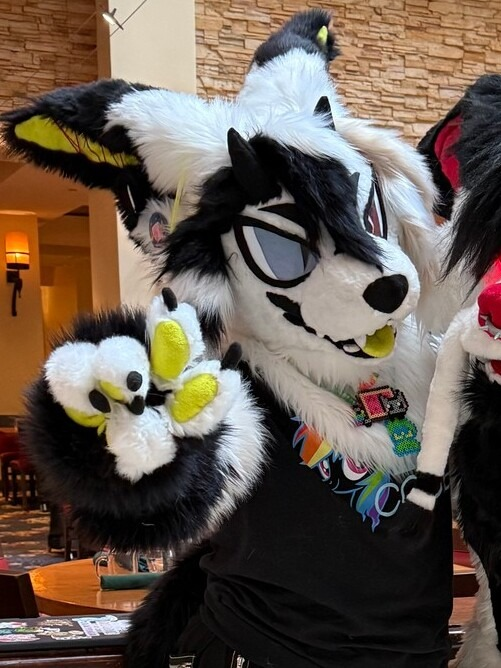

ABOUT

me @ Stratosfur '25
Jack of some trades including drawing, fursuit making, and electronic music! Currently attending community college for IT.
I have a prissy cat and crested gecko, still mourning my sweet old dachshund. I also go through nonograms like nobody's business
I love music, especially electronic, including hardcore, techno, ukg, electro swing, electronica... and more im likely forgetting.
I've also been into video games ever since i was little, growing up with my some of my fav titles like Alice: Madness Returns, Spyro Dawn of the Dragon, and Viva Piñata.
oh, and my favorite color is green... obviously!
I might put more in this little in-between section... maybe... more lists...
Inspirations
|
Fav. Animals
|
Media I Love
|